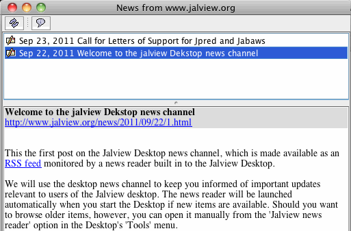

The Jalview Desktop RSS News Reader
The
Jalview Desktop includes a built in news reader for the Jalview Desktop
News Channel.
We will use the desktop news channel to keep you informed of important updates relevant to users of the Jalview desktop, such as web service outages and user community events.
The news reader will be launched automatically when you start the Desktop if new items are available. Should you want to browse older items, however, you can open it manually from the 'Jalview news reader' option in the Desktop's 'Tools' menu.
The Jalview news reader was introduced in Jalview version 2.7. Its implementation is based on JSwingReader.